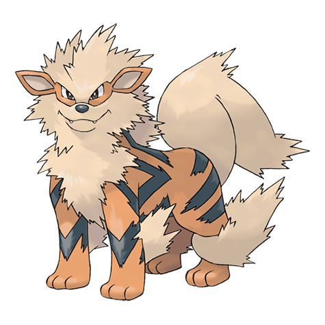

Назад
Арканайн

Арканайн — Покемон 1 поколения под номером 59 в Покедекс. Обитает он в регионе Канто и относится к Огненому типу. Это последняя стадия превращения Покемона Гроулита. Арканайн славится своей высокой скоростью. Говорят, что он способен пробежать 10000 км за сутки. Огонь, пылающий в теле этого Покемона, является его источником силы.
Тип:
Огненый
Эволюция
# 059 Арканайн
Финальная стадия